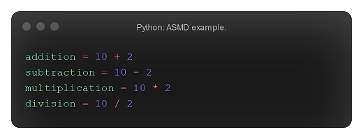
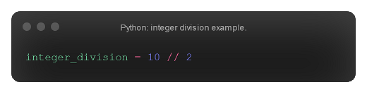
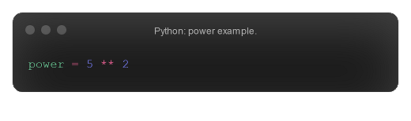
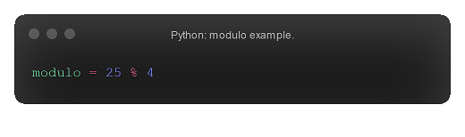
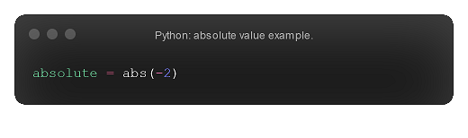
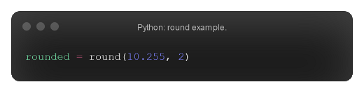

Numerical operations
Integers, like in real life, can have many operations performed on them. I'm sure we all know the common operations: addition, subtraction, multiplication, and division. However, there are also other operations, such as integer division and modulo. Every operation has its own syntax, which will be down on this page.
The big four: ASMD
Addition, subtraction, multiplication, and division. We all know what these are, you just need to know the syntax of them: + for addition, - for subtraction, * for multiplication, and / for regular division. However, it should be mentioned again that, in Python, regular division always produces a float. The code below would evaluate to 12, 8, 20, and 5.0, respectively.
Integer division
So, what if you want your division operation to return an integer, not a float? To do this, you can use the integer division operator, //. The code below would evaluate to 5, not 5.0. Warning: the // operator always rounds down, hence the common name 'floored division'.
Powers
In Python, to raise a numerical value to the power of another numerical value, you can use the ** operator. The code below evaluates to 25.
Modulo
The modulo operation returns the remainder of a division. For example, 25 divided by 4 is 6 remainer 1 (6×4=24, 24+1=25; remainder=1). So, in Python, 25 % 4 = 1. Modulo is commonly used to check whether numbers are even or odd, format times, and manipulating multiples.
abs(x)
The absolute value method, abs(x), returns the absolute value of a number x. For example, abs(2) = 2, and abs(-2) = 2; the absolute value returns the distance from a value to zero and is always positive. As you can see, the abs(x) method is often used to convert negative numbers to their positive counterpart.
divmod(x, y)
Hopefully, you remember reading about the modulo operator, %. You may have been wondering whether there was quick, pythonic method to getting the whole value and the remainder quickly, without writing multiple lines of code. Luckily for you, the divmod method returns just that. divmod(x, y) returns a tuple; the first element is the whole value of x / y, and the second element is the remainder value of x / y. For example, in the modulo explanation, we learned that 25 % 4 = 1, as 4 goes into 25 six whole times, remainder 1. Therefore, divmod(25, 4) returns (6, 1).
round(x, n)
The round method, round(x, n), rounds a number x to the nearest n decimal places. For example, round(10.255, 1) returns 10.3, whereas round(10.255, 2) returns 10.26.
